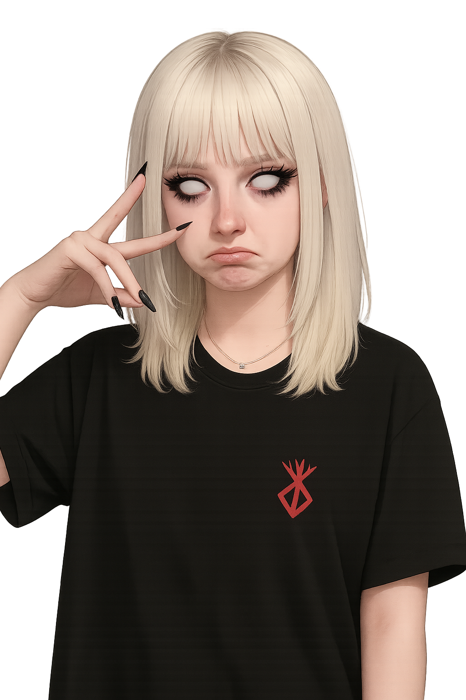

Vybraná práce
Můj poslední projekt "Psichokids"
Tento projekt jsem vytvořila v rámci školního projektu. Cílem bylo vytvořit webovou stránku pro psychologickou poradnu.
Ctižádostivý webdesignér, který se učí proměňovat nápady ve vizuální příběhy.

Jsem Sofiia, student střední školy, vášnivá ve webdesignu a vývoji. Učím se HTML, CSS a zkouším Figmu a Photoshop. Experimentuji s designem a hledám svůj styl.
Můj poslední projekt "Psichokids"
Tento projekt jsem vytvořila v rámci školního projektu. Cílem bylo vytvořit webovou stránku pro psychologickou poradnu.
Oslovte nás – pojďme společně něco vybudovat.